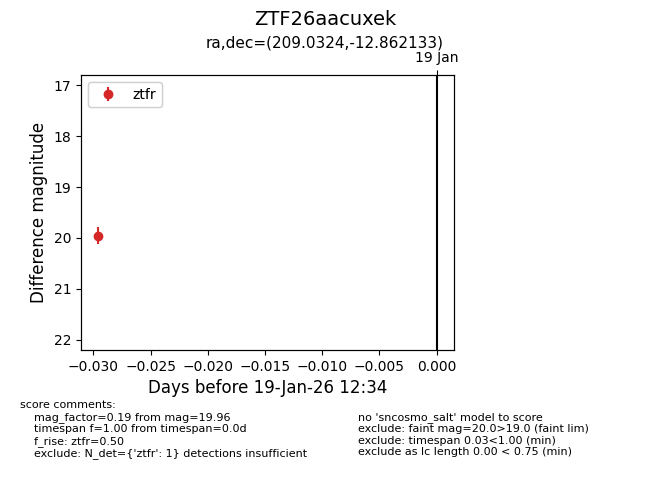
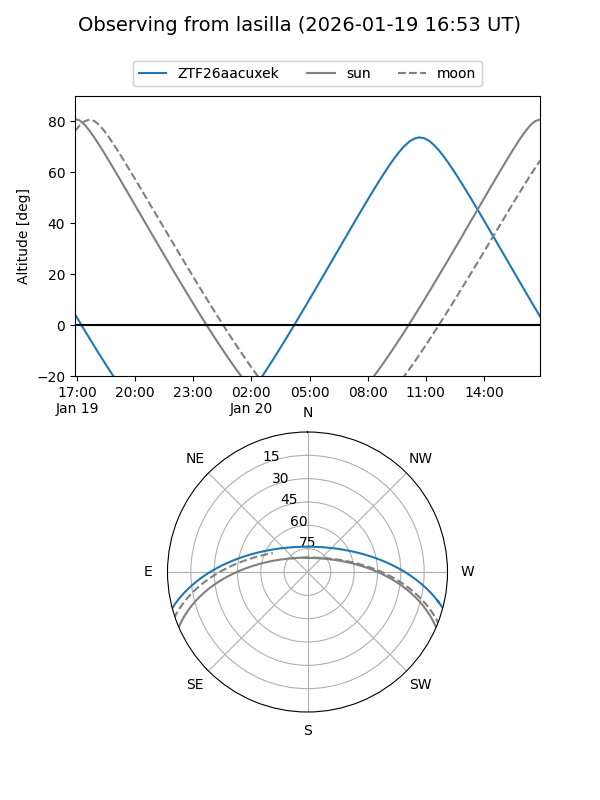
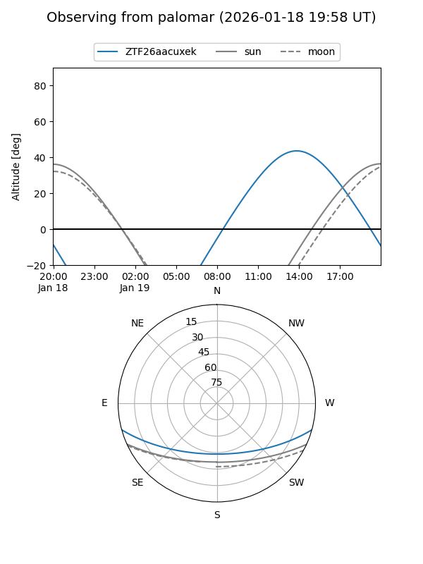

ZTF26aacuxek
Target ZTF26aacuxek at 2026-01-19 12:35
Aliases and brokers:
FINK: link
Lasair: link
ALeRCE: link
alt names
ZTF26aacuxek (ztf,fink_ztf)
Coordinates:
equatorial (ra, dec) = 209.0324,-12.86213
equatorial (HMS+DMS) = 13:56:07.77,-12:51:43.68
galactic (l, b) = (326.4135,+47.03879)
Flags:
Photometry:
last ztfr=19.96
1 ztfr detections
Lightcurve

Visibility


Additional plots